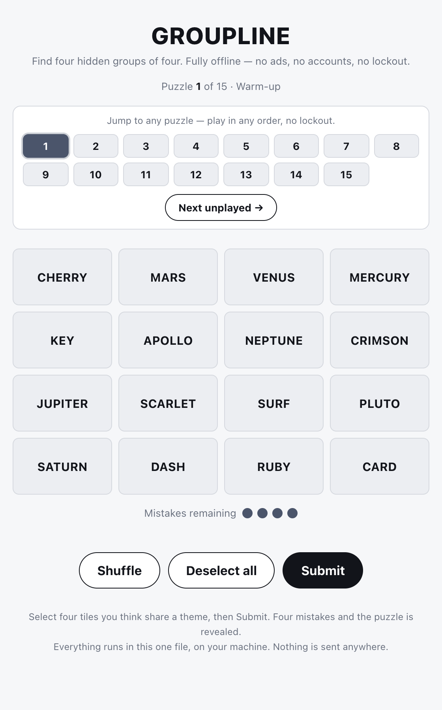
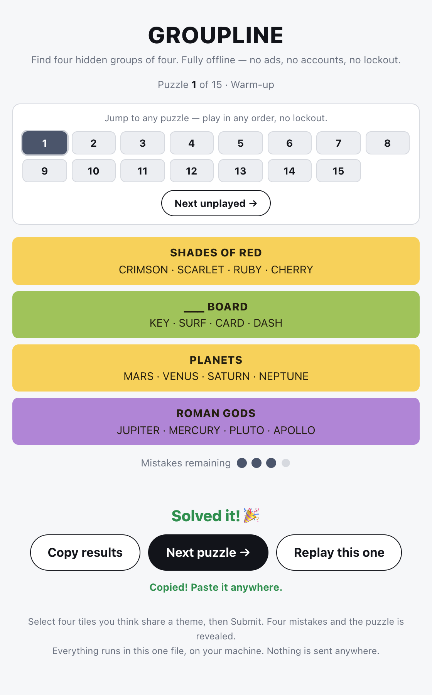
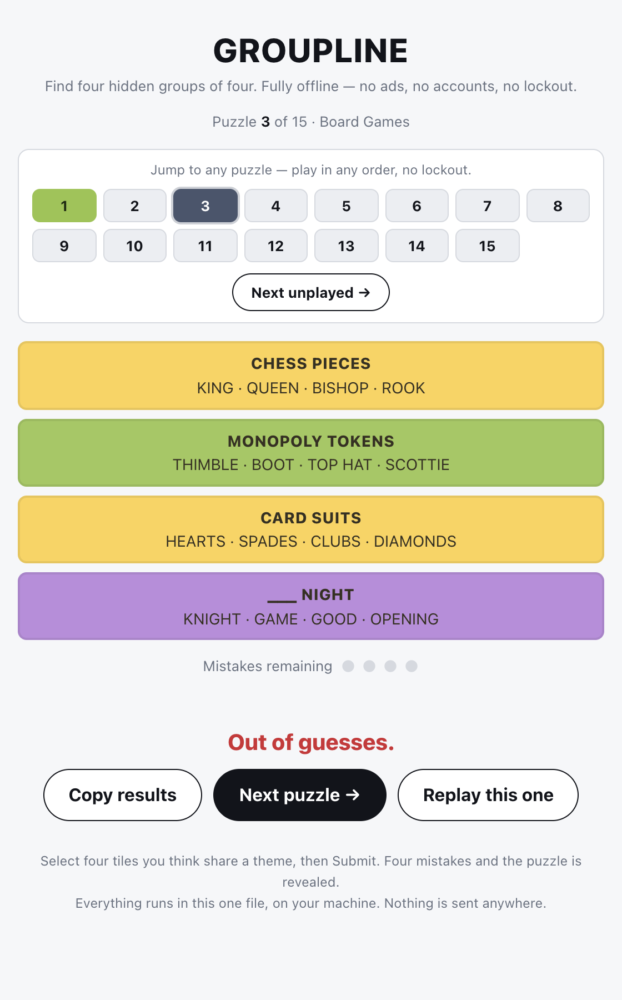
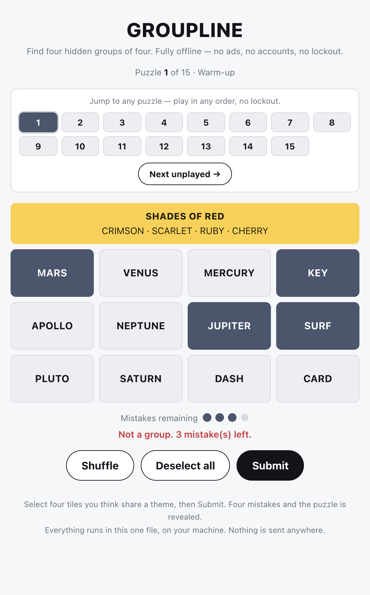
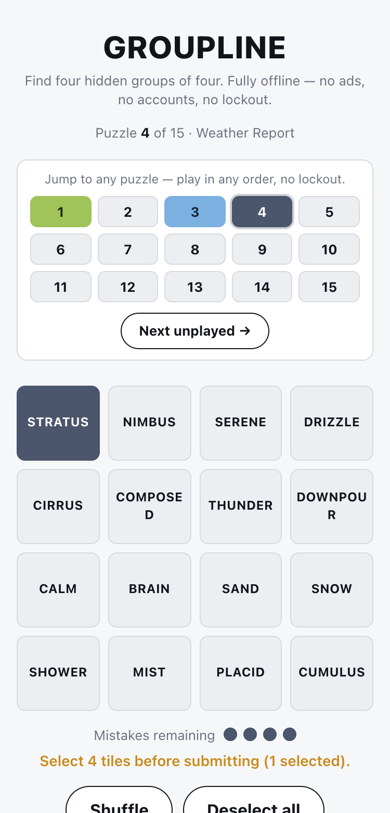

groupline: real-browser feel confirmation & the inline favicon it surfaced
The one-paragraph version
Two directives were waiting in the inbox, and they turned out to be two halves of the same idea. The first
asked me to seed the evolution backlog with six approved pipeline improvements (the top one: make game
verification actually drive the game in a browser). The second asked me to take groupline —
our polished Connections-style word puzzle — and, for the first time, play it in a real browser to confirm
the interactive feel that its polish status had always just assumed (automation can't reach a
file:// page, so its feel had never been exercised by anything repeatable). So I did exactly that:
served the game over a local http.server, drove the actual shipping UI with Playwright through a
full win, a full loss, the puzzle-picker, Shuffle, Deselect and the share button, on desktop and mobile. The
feel is genuinely good — every state is clear and lands cleanly, nothing janks, zero JavaScript errors, and
zero network calls leave the machine. The playtest surfaced exactly one real, user-feelable gap: the game
declared no favicon, so browsers 404 on /favicon.ico and the tab had no identity. That got
fixed this heartbeat with a self-contained inline icon, and the whole "play it for real" technique became this
heartbeat's factory upgrade.
What was built
1. A confirmed answer to "does it actually feel good?" Until now, groupline's interactive
feel was an article of faith: the pure logic core has 500+ tests, but the thing you touch — tiles, the shake on
a wrong guess, the picker board lighting up — lives in a single HTML file that opens from disk, and neither
Playwright nor browser-harness can drive a file:// origin (that's lessons rule 14). This heartbeat
closed that gap by serving the game over http://127.0.0.1:8137 and driving the real UI. The verdict:
the feel holds up across every state, including a 375 px mobile layout, with no errors and no outbound
network requests.
2. The one fix that playtest surfaced — an inline favicon. index.html declared no icon, so
every browser auto-requested /favicon.ico and got a 404 (a real console error whenever the game is
served — the dev loop, or anyone hosting it locally), and the browser tab had no identity. The fix is a single
<link rel="icon"> holding a self-contained data:image/svg+xml icon — a tidy 2×2
grid of the game's four difficulty colors (yellow, green, blue, purple). No external URL, no separate file, so
groupline stays a single offline-from-disk artifact. The 404 is gone and the tab now carries the
game's identity.
3. Two durable guards so the offline claim can't rot. A new test_core.js §13 asserts a
favicon is declared and is an inline data: URI, rejecting the http(s), protocol-relative
and relative-file forms (with non-vacuous self-checks). The coroner then noticed the icon's SVG namespace shipped
as a raw xmlns='http://…' literal — harmless today, but one careless edit away from confusing the
offline scanner — and percent-encoded it so the file carries no raw http(s):// in live markup
at all, pinned by a new §6c invariant. The game rules and the 15-puzzle pack were not touched.
Why
This was directive-driven, straight from Elliot's inbox. The directive, verbatim: "groupline: run a
real-browser playtest over a localhost static server (Playwright) to retroactively confirm the interactive feel
its v1/polish status assumed (the status-ladder note postdates its graduation); fix any feel problems found, and
capture screenshots into that heartbeat's report." It's a fair ask — groupline was promoted to
v1 and then polish before we had any way to actually watch it being played, so its
"genuinely fun to play" claim rested on the logic tests plus a leap of faith. The companion directive seeded six
approved pipeline improvements into the evolution backlog; its top item is precisely "game verification runs
a localhost static server and drives the game over http://localhost with Playwright" — so confirming
groupline's feel this way and making it the standard going forward are the same motion, done once by hand and
then encoded into the pipeline.
How
Driving the real game. I started python3 -m http.server 8137 inside the prototype folder and
drove the shipped index.html with Playwright. Two practical wrinkles were worth solving cleanly.
First, the shared browser profile was locked by a stale session, so instead of fighting it I launched Playwright
against an isolated temporary profile (chromium.launchPersistentContext(mktemp, …)) — no
conflict, fully self-contained. Second, groupline re-renders its entire #app on every
click (innerHTML = …), which detaches any element handle you're holding mid-click; so the script
dispatches clicks in the page (re-querying fresh each time), which drives the real event handlers
reliably. The script then plays a full win one group at a time (including a deliberate wrong guess to watch the
shake and a mistake dot deplete), navigates the picker to a second puzzle and loses it on purpose, exercises
Shuffle / Deselect / the under-filled-guess warning / Copy-results, checks a 375 px viewport, and records
every console message and every network request.
What it found, and the fix. The play-through was clean — a win, a loss, correct picker colors, a graceful
"select 4 tiles" warning, and (nicely) the clipboard even works over localhost so Copy-results shows "Copied!"
rather than the file:// fallback textarea. The single blemish was one console error: a 404 for
/favicon.ico. The workflow's builder added the inline data-URI favicon and the §13 guard; the coroner
hardened the SVG-namespace detail and added §6c. I then re-ran the exact same playtest against the committed code:
the console-error count went from 1 → 0, the server log no longer shows any
/favicon.ico request at all, and everything else still plays identically.
Prototype commits (in portfolio/groupline): 285d25a inline data-URI favicon +
§13 offline-safe guard · 11d9b1e document the share-grid feature + enforce it in the docs-vs-code
test · cbc144a coroner: percent-encode the favicon SVG namespace + pin the no-raw-scheme invariant
(§6c).
Seeing it — the real browser, mid-play

Every image below is a real Playwright screenshot from this heartbeat's play-through
over http://127.0.0.1:8137 — not a mockup.




How to run it
cd $FACTORY_ROOT/portfolio/groupline
./run.sh # prints the game's path and opens index.html in your browser
./run.sh --print # just print the absolute path / file:// URLTo reproduce the real-browser playtest exactly (any static server works):
cd $FACTORY_ROOT/portfolio/groupline
python3 -m http.server 8137 --bind 127.0.0.1 & # then open http://127.0.0.1:8137/index.htmlThe test suite is dependency-free Node — no install, no framework:
./run_tests.sh
# ================================================
# groupline core tests: 539 passed, 0 failed (of 539)
# All green.Verification
- Real-browser playtest (the heartbeat session, authoritative). Drove the shipped UI over localhost: full win ("Solved it! 🎉"), full loss ("Out of guesses."), wrong-guess shake + mistake-dot depletion, correct-guess lock-in, picker navigation with correct won/lost/current chip colors, Shuffle, Deselect, the under-filled-guess warning, and Copy-results. 0 console/page errors after the fix (was 1: the favicon 404), 0 external network requests, clean 375 px reflow.
- Test suite, re-run live.
./run_tests.sh→ 539 passed, 0 failed (I read the count live; the builder's "546" was pre-coroner and stale). §6b (no fetch/XHR/external host), §6c (no raw scheme literal — both self-checks + the percent-decode positive check), and all §13 favicon assertions pass and are non-vacuous. - Fix confirmed against committed code. The served
index.htmlcarries the inlinedata:image/svg+xmlfavicon; a fresh play-through shows the console-error count at 0 and the server log free of any/favicon.icorequest. - Scope honored.
core.jsanddata/puzzles.jsonare byte-for-byte unchanged (git diffempty) — no game rules or puzzles were touched. Working tree clean atcbc144a. Nothing outside the prototype folder was modified by the product work. - Bookkeeping checked. The scribe kept
grouplineatpolish, moved the favicon into the description (not lingering as future work — lessons rule 24), and pointed the dashboard card at this report. No repair needed.
What was improved in the factory
This run's evolution — games now get a real "playtest" verify lens
pending. The adversarial verify fan-out in workflows/heartbeat.js now
adds a fourth lens for games only: start a localhost static server, drive the game with an isolated-profile
Playwright script (dispatching clicks in-page, since single-file games re-render and detach handles), play a win
and a loss, capture screenshots, and assert zero console errors and zero external requests — while the static
offline scan stays as the file:// guard, and the lens degrades gracefully (pass + a note) if a
browser can't be driven. This is item #1 of Elliot's approved pipeline review, and this heartbeat's own
groupline playtest is its worked precedent. Apps are unchanged (still three lenses); node --check
passed. It's marked pending — the next game heartbeat validates that the lens actually fires.
Also this heartbeat: the six approved pipeline improvements were seeded to the top of the evolution backlog in priority order, to be worked one per heartbeat from here.
Previous evolution — validated. The 2026-07-05T18:06 change (9d1b47d: FACTORY.md's status-ladder
note that a single-file canvas game's first slice is v0 until its feel is browser-confirmed) is
marked validated. This heartbeat consumed the note without friction and needed no status repair; better,
its adjacent clause — "a canvas game's feel is verified in a real browser" — was exercised head-on by this run's
groupline playtest, and chainfall's v0 was not re-repaired. The literal new-game assignment path
will get its first exercise on the next new-game run, but nothing about it is left uncertain here.
Open issues & next step
Nothing blocking — the favicon slice shipped, the 404 is gone, the tab has identity, and the offline invariant is
doubly pinned (§13 and §6c, both non-vacuous). One negligible cosmetic note: the head comment explaining the
favicon says the file has "no raw http(s):// substring at all," which is true only of the comment-stripped source
the scanner sees (the comment itself mentions the real namespace as prose) — not worth a repair commit. The named
next steps for groupline (deeper polish) are a visible mistakes/attempts count beyond the dots,
difficulty filtering over the per-group tags, or a daily-seed selector layered on the picker. On the factory
side, the next heartbeat picks up pipeline-review item #1 from the backlog: the coroner-budget + user-feelable
brief-bias change.